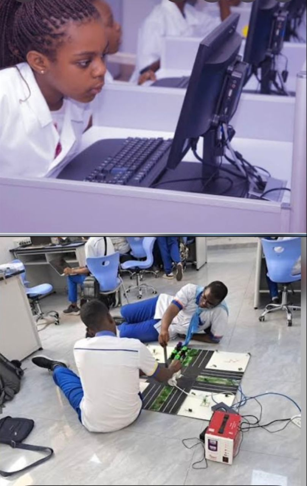
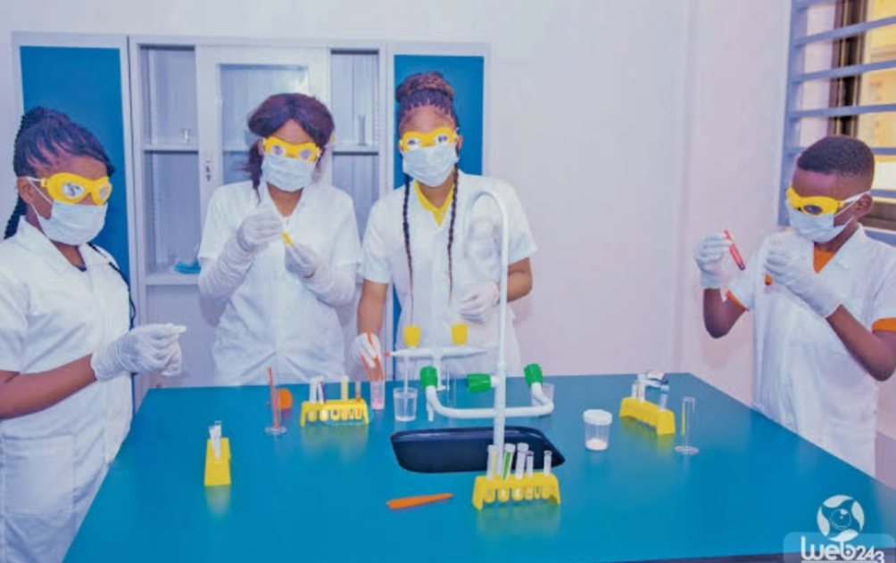

Étape 01 — Fondamentaux
Cycle Primaire
Le début d'une aventure intellectuelle. Nous mettons l'accent sur la maîtrise des langues et du calcul.

Étape 02 — Orientation
Éducation de Base
La 7ème et 8ème année constituent le tronc commun où l'élève explore ses affinités techniques.

Étape 03 — Expertise
Humanités Techniques
Une formation de pointe dans les métiers de l'industrie avec un équipement international.
Choisir une option
